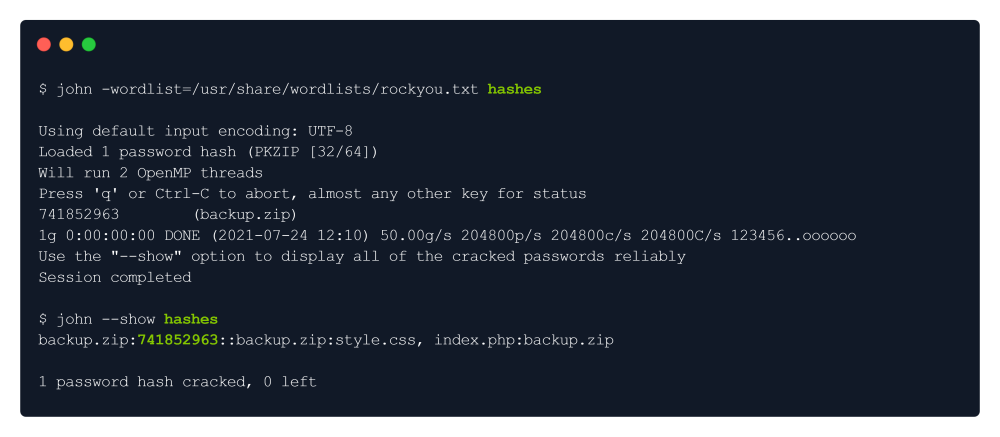
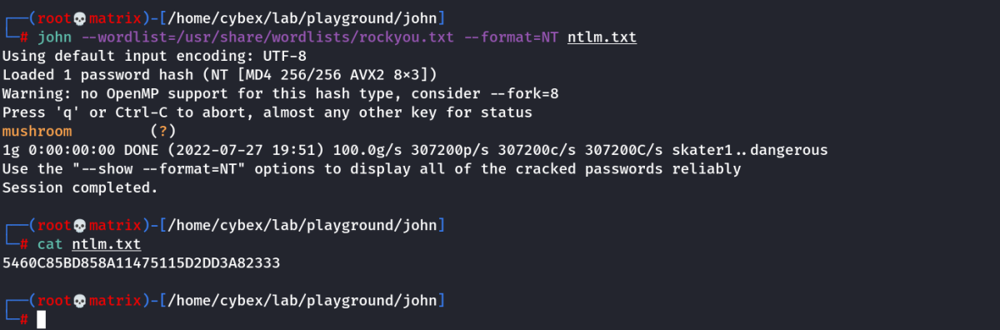
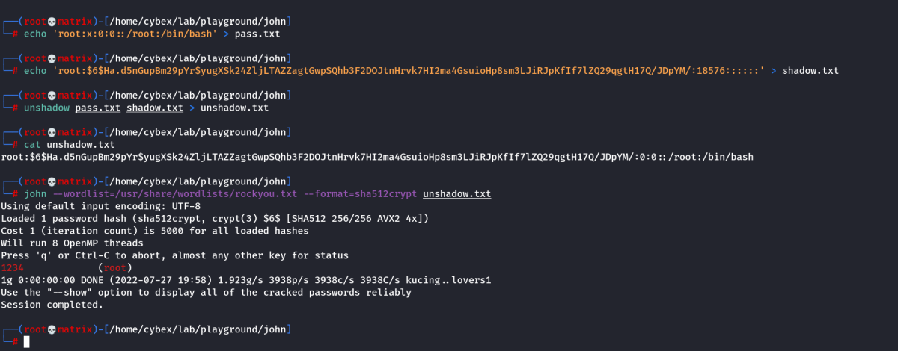
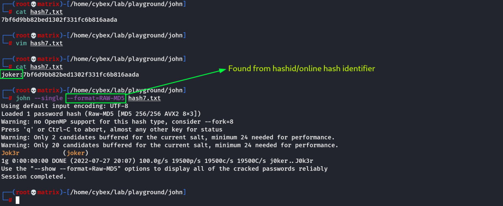
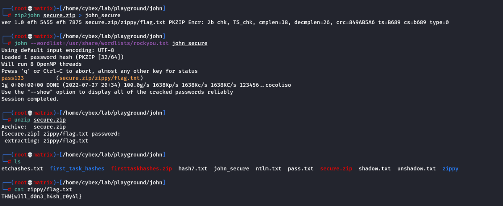
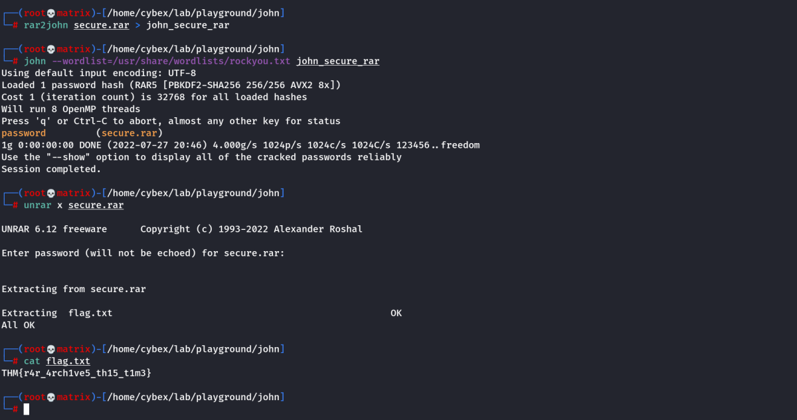
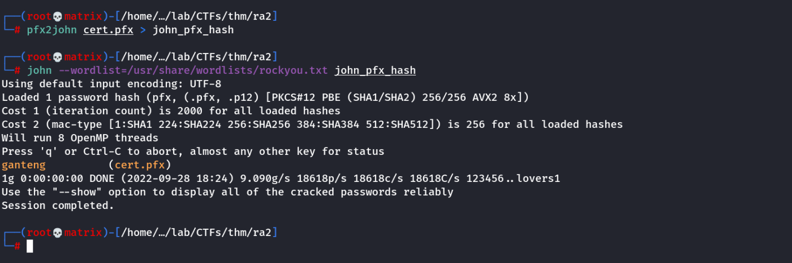

john the ripper
Password cracking by brute force.

We do some random tries.

John the Ripper is a free password cracking software tool. Originally developed for the
Unix operating system, it can run on fifteen different platforms (eleven of which are
architecture-specific versions of Unix, DOS, Win32, BeOS, and OpenVMS). It is among the
most frequently used password testing and breaking programs as it combines a number of
password crackers into one package, autodetects password hash types, and includes a
customizable cracker. It can be run against various encrypted password formats
including several crypt password hash types most commonly found on various Unix
versions (based on DES, MD5, or Blowfish), Kerberos AFS, and Windows NT/2000/XP/2003 LM
hash. Additional modules have extended its ability to include MD4-based password hashes
and passwords stored in LDAP, MySQL, and others.
apt install john

In order to successfully crack the password, we will have to convert the ZIP into the hash using the
zip2john module that comes within John the Ripper:

Now, we will type the following command:
john -wordlist=/usr/share/wordlists/rockyou.txt hashes
So it will load the wordlist & it will do a bruteforce attack against the hash stored in file hashes . Once the
password is cracked, we will use the --show option to display the cracked password.

We got the password: 741852963
John with few specific options
john hash --format=Raw-SHA512 --wordlist=rockyou.txt --rules=jumbo --fork=4
John for cracking a user's hash received from Database:
john gamer_hash --wordlist=/usr/share/wordlists/rockyou.txt --format=Raw-SHA256
To view it again:
john gamer_hash --show --format=Raw-SHA256
THM: John Room
Automatic Cracking
John has built-in features to detect what type of hash it's being given, and to select appropriate rules and formats to crack it for you, this isn't always the best idea as it can be unreliable- but if you can't identify what hash type you're working with and just want to try cracking it, it can be a good option! To do this we use the following syntax:
john --wordlist=[path to wordlist] [path to file]
--wordlist= - Specifies using wordlist mode, reading from the file that you supply in the following path...
[path to wordlist] - The path to the wordlist you're using, as described in the previous task.
Example Usage:
john --wordlist=/usr/share/wordlists/rockyou.txt hash_to_crack.txt
Identifying Hashes
Sometimes John won't play nicely with automatically recognising and loading hashes, that's okay! We're able to use other tools to identify the hash, and then set john to use a specific format. There are multiple ways to do this, such as using an online hash identifier like this one. I like to use a tool called hash-identifier, a Python tool that is super easy to use and will tell you what different types of hashes the one you enter is likely to be, giving you more options if the first one fails.
To use hash-identifier, you can just pull the python file from gitlab using: wget https://gitlab.com/kalilinux/packages/hash-identifier/-/raw/kali/master/hash-id.py.
Then simply launch it with python3 hash-id.py and then enter the hash you're trying to identify- and it will give you possible formats
Online Tool: https://hashes.com/en/tools/hash_identifier
Python Tool: https://gitlab.com/kalilinux/packages/hash-identifier/-/tree/kali/master
Kali Tool: hashid
Format-Specific Cracking
Once you have identified the hash that you're dealing with, you can tell john to use it while cracking the provided hash using the following syntax:
john --format=[format] --wordlist=[path to wordlist] [path to file]
--format= - This is the flag to tell John that you're giving it a hash of a specific format, and to use the following format to crack it
[format] - The format that the hash is in
Example Usage:
john --format=raw-md5 --wordlist=/usr/share/wordlists/rockyou.txt hash_to_crack.txt
Note:
When you are telling john to use formats, if you're dealing with a standard hash type, e.g. md5 as in the example above, you have to prefix it with raw- to tell john you're just dealing with a standard hash type, though this doesn't always apply. To check if you need to add the prefix or not, you can list all of John's formats using john --list=formats and either check manually, or grep for your hash type using something like john --list=formats | grep -iF "md5".
Cracking Windows Authentication Hashes (NT Hash/NTLM)
Format to be Used: NT
Command: john --wordlist=/usr/share/wordlists/rockyou.txt --format=NT ntlm.txt

Cracking /etc/shadow Hashes
Cracking Linux System Passwords:
We need to dump /etc/passwd --→ password.txt and /etc/shadow --→ shadow.txt
unshadow password.txt shadow.txt > crackMe.txt
This will put the password hashes in its place in the Output file.
john --wordlist=/usr/share/wordlists/rockyou.txt crackMe.txt
Note: We do not need to explicitly mention the format to be used. However, in certain times --format=sha512crypt can be used.
Exercise:

Cracking SSH Keys with John
Cracking Paraphrase from ID_RSA

Get the complete id_rsa (Private Key) contents into a file. (Say kay_id_rsa)
chmod 600 kay_id_rsa
ssh2john kay_id_rsa > john_ssh_hash
john --wordlist=/usr/share/wordlists/rockyou.txt john_ssh_hash

We found the Paraphrase for kay_id_rsa
Credentials Found
Username: kay
Paraphrase: beeswax
We can now login to SSH with the kay_id_rsa and the cracked paraphrase
Single Crack Mode
So far we've been using John's wordlist mode to deal with brute forcing simple., and not so simple hashes. But John also has another mode, called Single Crack mode. In this mode, John uses only the information provided in the username, to try and work out possible passwords heuristically, by slightly changing the letters and numbers contained within the username.
Word Mangling
The best way to show what Single Crack mode is, and what word mangling is, is to actually go through an example:
If we take the username: Markus
Some possible passwords could be:
Markus1, Markus2, Markus3 (etc.)
MArkus, MARkus, MARKus (etc.)
Markus!, Markus$, Markus* (etc.)
This technique is called word mangling. John is building it's own dictionary based on the information that it has been fed and uses a set of rules called "mangling rules" which define how it can mutate the word it started with to generate a wordlist based off of relevant factors for the target you're trying to crack. This is exploiting how poor passwords can be based off of information about the username, or the service they're logging into.
GECOS
John's implementation of word mangling also features compatibility with the Gecos fields of the UNIX operating system, and other UNIX-like operating systems such as Linux. So what are Gecos? Remember in the last task where we were looking at the entries of both /etc/shadow and /etc/passwd? Well if you look closely You can see that each field is seperated by a colon ":". Each one of the fields that these records are split into are called Gecos fields. John can take information stored in those records, such as full name and home directory name to add in to the wordlist it generates when cracking /etc/shadow hashes with single crack mode.
Using Single Crack Mode
To use single crack mode, we use roughly the same syntax that we've used to so far, for example if we wanted to crack the password of the user named "Mike", using single mode, we'd use:
john --single --format=[format] [path to file]
--single - This flag lets john know you want to use the single hash cracking mode.
Example Usage:
john --single --format=raw-sha256 hashes.txt
Note:
If you're cracking hashes in single crack mode, you need to change the file format that you're feeding john for it to understand what data to create a wordlist from. You do this by prepending the hash with the username that the hash belongs to, so according to the above example- we would change the file hashes.txt
From:
1efee03cdcb96d90ad48ccc7b8666033
To
mike:1efee03cdcb96d90ad48ccc7b8666033
Exercise: (The Username was Provided - joker)

Cracking Password Protected ZIP Files
First we need to convert the ZIP file to John format.
Zip2John
Similarly to the unshadow tool that we used previously, we're going to be using the zip2john tool to convert the zip file into a hash format that John is able to understand, and hopefully crack. The basic usage is like this:
zip2john [options] [zip file] > [output file]
[options] - Allows you to pass specific checksum options to zip2john, this shouldn't often be necessary
[zip file] - The path to the zip file you wish to get the hash of
> - This is the output director, we're using this to send the output from this file to the...
[output file] - This is the file that will store the output from
Example: zip2john zipfile.zip > zip_hash.txt
Cracking
We're then able to take the file we output from zip2john in our example use case called "zip_hash.txt" and, as we did with unshadow, feed it directly into John as we have made the input specifically for it.
john --wordlist=/usr/share/wordlists/rockyou.txt zip_hash.txt
Exercise:

Cracking Password Protected ZIP Files
First we need to convert the ZIP file to John format.
Rar2John
Similarly to the unshadow tool that we used previously, we're going to be using the zip2john tool to convert the zip file into a hash format that John is able to understand, and hopefully crack. The basic usage is like this:
rar2john [options] [rar file] > [output file]
[options] - Allows you to pass specific checksum options to zip2john, this shouldn't often be necessary
[rar file] - The path to the rar file you wish to get the hash of
> - This is the output director, we're using this to send the output from this file to the...
[output file] - This is the file that will store the output from
Example: rar2john rarfile.rar > rar_hash.txt
Cracking
We're then able to take the file we output from zip2john in our example use case called "zip_hash.txt" and, as we did with unshadow, feed it directly into John as we have made the input specifically for it.
john --wordlist=/usr/share/wordlists/rockyou.txt rar_hash.txt
Exercise:

Cracking Certificate FIles
Windows servers use .pfx files that contain a public key file and the associated private key file. Let’s use pfx2john.
Then, we will use john to crack it.
pfx2john cert.pfx > john_pfx_hash
john --wordlist=/usr/share/wordlists/rockyou.txt john_pfx_hash

We find the password for the cert.pfx file.